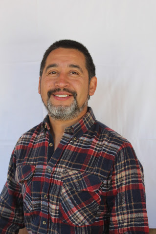

Curriculum Juan Pablo Monsalve
|

|
Acerca de mi
Docente de educación básica con más de once años de experiencia
en el ámbito escolar, tanto en el sector público como privado.
Mi formación académica incluye un magíster en gestión escolar y
un postítulos en matemática, lo que me ha permitido desarrollar
competencias en el diseño, desarrollo y evaluación de currículos,
proyectos y programas educativos, así como en el uso de herramientas
tecnológicas y metodologías innovadoras para el aprendizaje de las
ciencias y las matemáticas.
Habilidades
- Comunicación efectiva: Capacidad para expresar ideas de manera clara y comprensible, tanto de forma oral como escrita.
- Resolución de problemas: Habilidad para analizar situaciones y encontrar soluciones efectivas y eficientes.
- Adaptabilidad: Flexibilidad y disposición para ajustarse a cambios y nuevas circunstancias.
- Trabajo en equipo: Colaboración efectiva con otros para alcanzar objetivos comunes, aportando positivamente al ambiente laboral.
Estudios Realizados
- Estudios Básicos: Escuela Primaria "Los Sabios", Ciudad de Ejemplo, País Ejemplo, 2005 - 2011
- Enseñanza Media: Colegio Secundario "Nueva Generación", Ciudad de Ejemplo, País Ejemplo, 2011 - 2015
- Educación Superior: Universidad Imaginaria, Ciudad de Ejemplo, País Ejemplo, 2016 - 2020